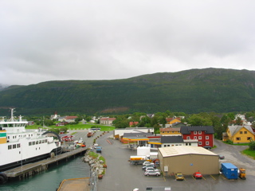
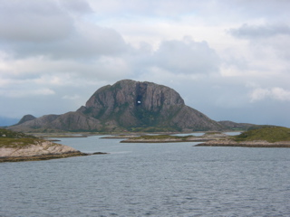

We crossed the Arctic Circle today, but I was in bed when it happened. Wondered out at a couple of the ports we stopped at, but nothing much.

Later, we passed a mountain with a hole in it. The hole in Torghatten is 160 meters long, 35 meters high, and 15 meters wide. There is a rather neat story of how the mountain and its hole are mad from a hat and an arrow. All turned to stone since that’s what daylight does to trolls.